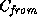

Common Lisp the Language, 2nd Edition

The second step of the update initializes the newly added slots and
performs any other user-defined actions. This step is implemented by
the generic function update-instance-for-different-class. The
generic function update-instance-for-different-class is invoked
by change-class after the first step of the update has been
completed.
The generic function update-instance-for-different-class is invoked on two arguments computed by change-class. The first argument passed is a copy of the instance being updated and is an instance of the class ; this copy has dynamic extent within the generic function change-class. The second argument is the instance as updated so far by change-class and is an instance of the class .
The generic function update-instance-for-different-class also takes any number of initialization arguments. When it is called by change-class, no initialization arguments are provided.
There is a system-supplied primary method for the generic function
update-instance-for-different-class that has two parameter
specializers, each of which is the class standard-object. First
this method checks the validity of initialization arguments and
signals an error if an initialization argument is supplied that is not
declared valid (see section 28.1.9.2).
Then it calls the
generic function shared-initialize with the following arguments:
the instance, a list of names of the newly added slots, and the
initialization arguments it received.